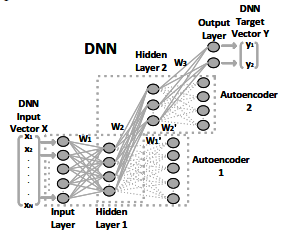
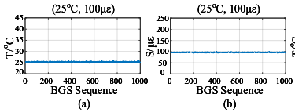
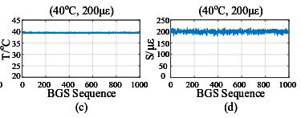
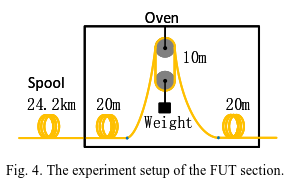
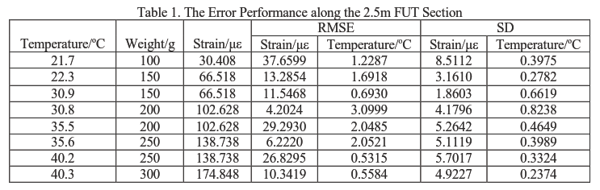

large effective-area fiber ~ multiple Brillouin peaks
use DNN to extract both the temperature and strain distribution form BGS without the need of fitting and calculation of two BFS equations
LEAF
Two peak with different BFS temperature and strain coefficients
Structure of DNN
1input (data points) + 2hidden(number of neurons: 40 and 10) + 1output (temperature and strain)

Train
- simulated ideal BGSs
- ideal two-peak BGS simulate by using coefficients and theoretical Lorentzian as input
- corresponding temperature and strain values as target output
- temperature range 20:1:40℃
- strain range 0:20:200$\mu\varepsilon$
- BGS are normalized with the peak value of Peak2 set to 0.25, 0.3, 0.35 (observed from experiment)
- Peak1 bandwidth: 44, 47, 50MHz
- Peak2 bandwidth: 37, 43, 49MHz
- simulated BGSs with white Gaussian noise, the SNR is set to be the same as experimental data
Results
simulation


experiment

